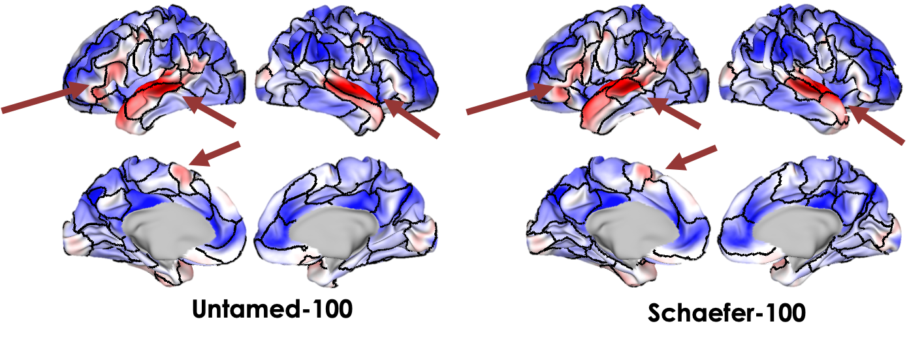

Graph Learning for Cortical Parcellation from
Tensor Decompositions of Resting-State fMRI
Untamed atlas
- Yijun Liu 1
- Jian (Andrew) Li 2, 3
- Jessica L. Wisnowski 4, 5
- Richard M. Leahy 1
- 1Ming Hsieh Department of Electrical and Computer Engineering, University of Southern California
- 2Athinoula A. Martinos Center for Biomedical Imaging, Massachusetts General Hospital and Harvard Medical School
- 3Center for Neurotechnology and Neurorecovery, Department of Neurology, Massachusetts General Hospital and Harvard Medical School
- 4Radiology and Pediatrics, Division of Neonatology, Children’s Hospital Los Angeles
- 5Keck School of Medicine, University of Southern California

Highlights
- Bridging the gap between brain networks (without biologically impausible constraints) and cortical parcellation
- Superior to or comparable to popular atlases in terms of RSFC homogeneity, task contrasts alignment, and cytoarchitectonics alignment
- Highly automated computational pipeline, allowing for rapid adaptation to new datasets and the generation of custom parcellations in just minutes once the brain networks are obtained
Example Visualization
Below demonstrates the 100-parcel Untamed and Schaefer atlas overlaid on Human Connectome Project (HCP) group language task activation map.

Framework
BibTeX
If you find our project useful in your research, please cite:
@article{liu2024graph_bioarxiv,
title={Graph Learning for Cortical Parcellation from Tensor Decompositions of Resting-State fMRI},
author={Liu, Yijun and Li, Jian and Wisnowski, Jessica L and Leahy, Richard M},
journal={bioRxiv},
pages={2024--01},
year={2024},
publisher={Cold Spring Harbor Laboratory}
}